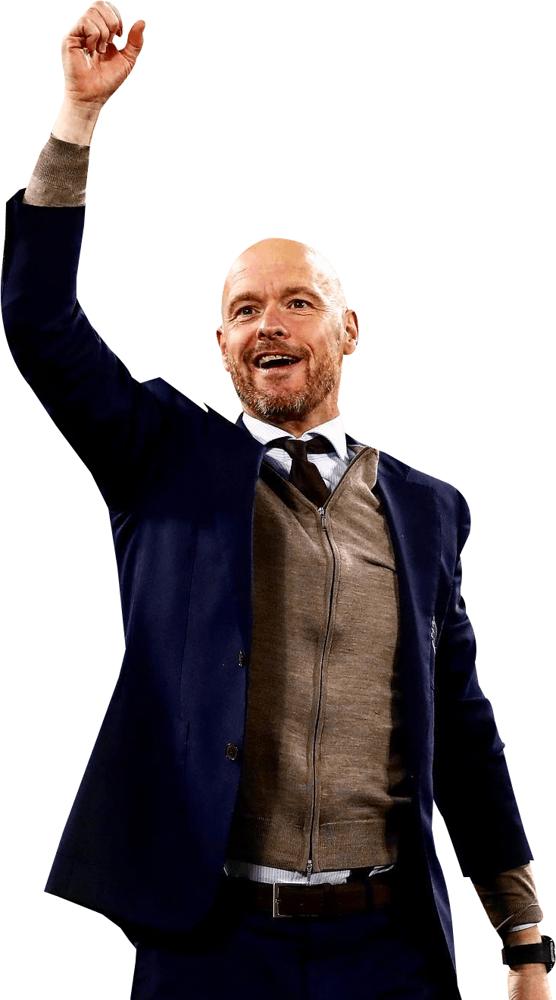

|  | ERIK TEN HAG |
| Erik ten Hag is a Dutch professional football coach and former player, who is currently the manager of Premier League club Manchester United.As a player, Ten Hag played as a centre-back in the Dutch league for 13 years, making appearances for Twente, De Graafschap, RKC Waalwijk and Utrecht | |